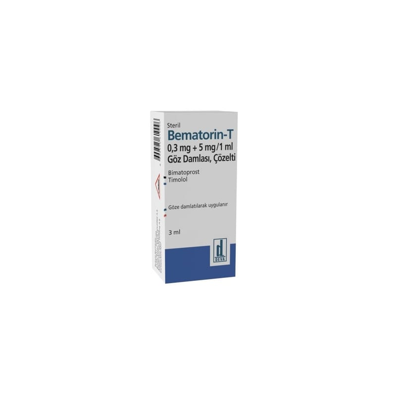

Bematorin-T 0,3 mg + 5 mg/1 ml Göz Damlası, Çözelti, 1ADET

Ne için kullanılır
KT · Bölüm 1BEMATORİN-T, gözdeki yüksek basıncı kontrol etmek için kullanılan çözelti şeklinde bir göz damlasıdır. İçinde 3 mL çözelti bulunan şişelerde sunulur. Her ikisi de gözdeki basıncı düşüren iki farklı etkin madde (bimatoprost ve timolol) içerir. Bimatoprost bir prostaglandin analoğu olan prostamidler adlı bir ilaç grubuna aittir. Timolol ise beta-blokörler olarak adlandırılan ilaç grubunda yer alır. Gözlerinizde, gözün iç kısmını besleyen berrak, suya benzer bir sıvı bulunmaktadır. Sıvı sabit bir biçimde gözden boşaltılır ve bunun yerine yeni sıvı yapılır. Sıvının yeterince hızlı boşaltılamadığı durumda, gözün içindeki basınç artar ve görmenizde hasar oluşması ile
sonuçlanabilir (glokom olarak adlandırılan bir hastalık). BEMATORİN-T, sıvı üretimini azaltarak ve boşaltılan sıvının miktarını artırarak gözün içindeki basıncı düşürür. BEMATORİN-T göz damlası, yaşlılar dahil yetişkinlerin gözlerindeki yüksek basıncı tedavi etmek için kullanılır. Bu yüksek basınç, glokoma neden olabilir. Doktorunuz, beta-blokörler veya prostaglandin analoglarını içeren diğer damlalar kendi başlarına yeterince etkili olmadığında size BEMATORİN-T’yi reçeteleyecektir.